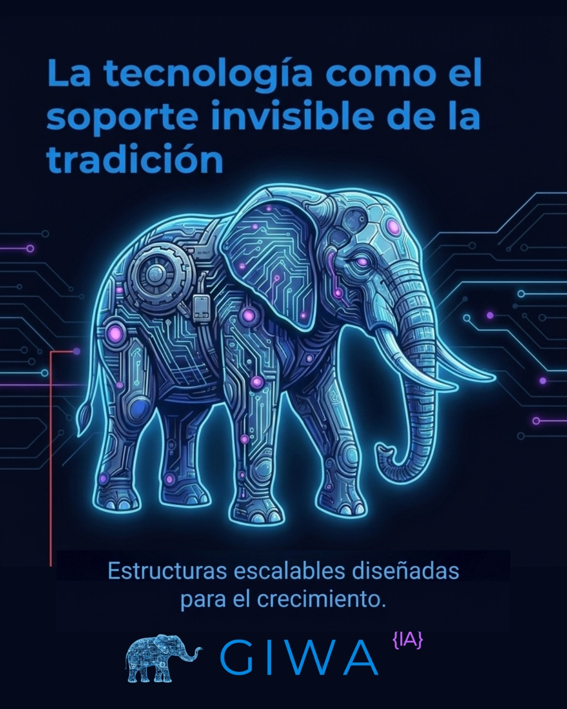
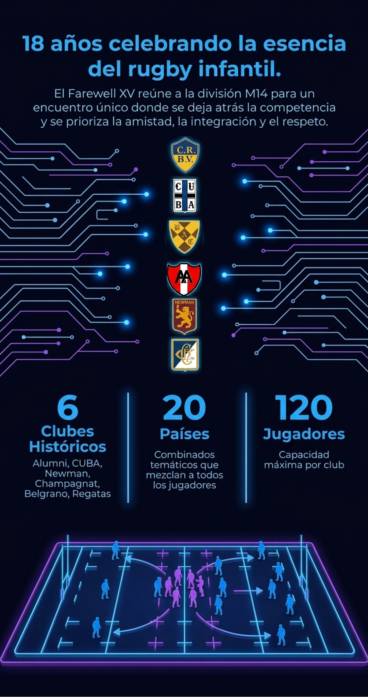
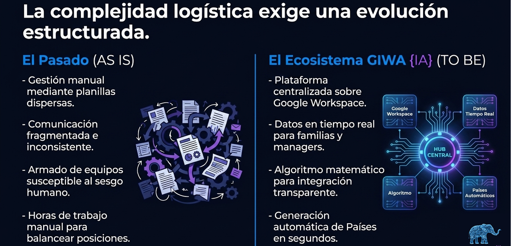

Deporte
Encuentro de rugby juvenil: tradición potenciada por IA
Un encuentro histórico de rugby juvenil que durante 18 años se organizó de forma manual. Con la tecnología de GIWA {IA}, el evento dio un salto a un modelo moderno, ordenado y transparente.
Qué hicimos
- Centralizamos toda la logística en un ecosistema digital.
- Implementamos un algoritmo propio para equilibrar niveles y mezclar jugadores entre clubes.
- Automatizamos la creación de países y equipos en segundos.
- Desplegamos WebApps para managers y familias con información en tiempo real.
El resultado
Más equidad, menos trabajo operativo y una experiencia más humana para los chicos.
La tecnología se vuelve invisible; la tradición se fortalece.


